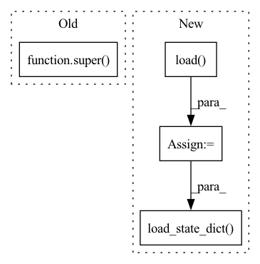

Pattern ID :41223
Before Change
@classmethod
def from_pretrained(cls, pretrained_model_name_or_path, *model_args, **kwargs):
model = super() .from_pretrained()
model.numericalizer = BartNumericalizer(pretrained_model_name_or_path)
return model, 0 //TODO return best_decascore
After Change
full_checkpoint_path = os.path.join(save_directory, model_checkpoint_file)
logger.info(f"Loading the model from {full_checkpoint_path}")
model = Bart(args=args)
save_dict = torch.load( full_checkpoint_path, map_location=device)
model.load_state_dict( save_dict["model_state_dict"])
return model, save_dict.get("best_decascore")
In pattern: SUPERPATTERN
Frequency: 3
Non-data size: 4
Instances Fragment ID: 116227289
Project Name: stanford-oval/genienlp
Commit Name: 446c42622083e0413e9437c8fdd4be61e7bb6b13
Time: 2020-11-07
Author: s.j.semnani@gmail.com
File Name: genienlp/models/general_seq2seq.py
M Class Name: Bart
N Class Name: Bart
M Method Name: from_pretrained(2)
N Method Name: from_pretrained(2)
M Parent Class: nn.Module
N Parent Class: BartForConditionalGeneration
M File Name: genienlp/models/general_seq2seq.py
N File Name: genienlp/models/general_seq2seq.py
M Start Line: 286
M End Line: 288
N Start Line: 286
N End Line: 298
Before Change
def init_detokenizer(self):
super() .init_detokenizer()
if torch.cuda.is_available():
self.detokenizer = self.detokenizer.cuda()
After Change
def init_detokenizer(self):
print("initializing VQGanDetokenizer")
self.detokenizer = VQGanDetokenizer()
params = torch.load( self.detoker_params_path)
self.detokenizer.load_state_dict( params)
del params
if torch.cuda.is_available(): self.detokenizer = self.detokenizer.cuda()
Fragment ID: 116227288
Project Name: kuprel/min-dalle
Commit Name: e4c2be54cba5958c43630a32a32b4fb75dfcdd79
Time: 2022-07-01
Author: brkuprel@gmail.com
File Name: min_dalle/min_dalle_torch.py
M Class Name: MinDalleTorch
N Class Name: MinDalleTorch
M Method Name: init_detokenizer(1)
N Method Name: init_detokenizer(1)
M Parent Class: MinDalleBase
N Parent Class: MinDalleBase
M File Name: min_dalle/min_dalle_torch.py
N File Name: min_dalle/min_dalle_torch.py
M Start Line: 84
M End Line: 84
N Start Line: 81
N End Line: 85
Before Change
super().__init__(model, loader, criterion, args)
def _reset(self, args):
super() ._reset(args)
self.musdb18_root = args.musdb18_root
After Change
self.use_cuda = args.use_cuda
config = torch.load( args.model_path, map_location=lambda storage, loc: storage)
if isinstance(self.model, nn.DataParallel):
self.model.module.load_state_dict(config["state_dict"])
else:
self.model.load_state_dict( config["state_dict"])
def run(self):
if self.use_estimate_all:
self.estimate_all() Fragment ID: 116227291
Project Name: tky823/dnn-based_source_separation
Commit Name: 149ed6ddfa0ed3255f87e8fdc0a6049051c8643f
Time: 2021-10-10
Author: 40362510+tky823@users.noreply.github.com
File Name: egs/musdb18/conv-tasnet/src/adhoc_driver.py
M Class Name: AdhocTester
N Class Name: AdhocTester
M Method Name: _reset(2)
N Method Name: _reset(2)
M Parent Class: TesterBase
N Parent Class: TesterBase
M File Name: egs/musdb18/conv-tasnet/src/adhoc_driver.py
N File Name: egs/musdb18/conv-tasnet/src/adhoc_driver.py
M Start Line: 124
M End Line: 124
N Start Line: 124
N End Line: 151